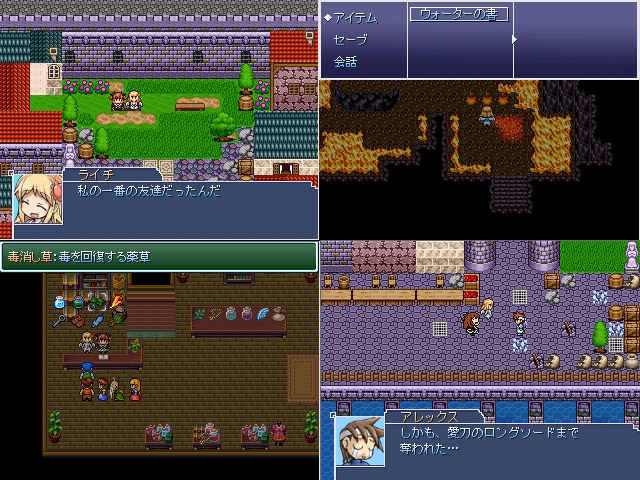

| No.79 ライチ・イン・ナイトメア |
 |
|
| 作者：かりかり | |
| ツクール：RPGツクール2000 | |
| ジャンル：脱出ゲーム | |
| 配信/投稿：可/可 | |
| 作者コメント： 「この指輪にはそういう言い伝えがあるのよ」 「へー、そうなんだ」 「私達何時までも友達でいられると良いね」 ライチ視点の脱出ゲームです。脱出ゲームのはずでした。 出来上がったのは脱出ゲームっぽい何かです。 つまりただのksg。 ソルティライチ42本を生贄に捧げてなんとか完成させました ちなみにアリスインナイトメアとは何の関係もないよ！ ナイトメア要素も多分ないよ！ |
|
| 管理人コメント： 登録日から数えて一日一本のペースですね。 |
|
| ダウンロード(5.2MB) / 感想掲示板 | |
| 前の作品 / 次の作品 / TOPへ戻る | |